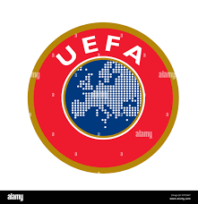
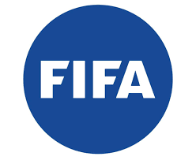

The History of Football

Records trace the origins of the sport back more than 2,000 years ago to ancient China, Greece and Rome, where the 'ball' was made of rock or animal hide stuffed with hair. There have even been suggestions it dates even further back to old Mesoamerican cultures - but 'football' or 'soccer' as we know it today has its roots in 19th century England.
From England, the idea of football spread to Europe and across the Atlantic. Two schoolteachers, August Hermann and Konrad Koch, introduced the game to Germany circa 1874. Immigrants, meanwhile, are thought to have brought soccer to the United States.
The first football association was formed in England in 1863. Rules were established - but continued to change - and the size and weight of the match-ball standardised. Crucially, carrying the ball with the hands was outlawed: association football (soccer) and rugby became two separate entities.
Football continued to undergo rapid development into the 1900s, accelerated by industrialisation. Public school teams soon became the minority following the emergence of factory and other work-based clubs. The best players received monetary incentives, and tickets were sold to the public - mainly members of the working-class - for matches.
Domestic leagues became commonplace around the world - the English Football League being the first professional division. In Germany, football was played at an amateur level until 1949, when semi-professional leagues were introduced. The country's first professional division, the Bundesliga, started in 1963/64. Forty-six clubs from the former West Germany applied for admission to the new league. Sixteen were selected based on their sporting track record, economic criteria and representation of the various sub-regional leagues. Until 2001, the Bundesliga was directly under the auspices of the Deutscher Fußball-Bund (DFB or German Football Association). This changed with the formation of the Deutsche Fußball-Liga (DFL or German Football League).
The UEFA European Football Championship, more commonly known as the Euros, is the primary association football competition contested by the senior men's national teams of the members of the Union of European Football Associations (UEFA), determining the continental champion of Europe. It is held every four years, in the even-numbered year between World Cups. The first edition took place in 1960. The CONCACAF Gold Cup, the main association football competition of the men's national football teams governed by The Confederation of North, Central America and Caribbean Association Football (CONCACAF), determining the continental champion of North America, Central America, and the Caribbean, is staged every two years.
Today 211 national associations are members of FIFA, football's world governing body. The world regions are divided into six confederations: Confédération Africaine de Football (CAF), Asian Football Confederation (AFC), UEFA, CONCACAF, Oceania Football Confederation (OFC), and Confederación Sudamericana de Fútbol (CONMEBOL). While 32 countries took part in World Cup qualifying in 1934, that number has risen to over 200, reflecting football’s standing as a truly global phenomenon.
Early soccer leagues in the US mostly adopted the name 'football' for their activities, but confusion between American football and association football resulted in the term 'soccer' being used to describe the latter in the 1910s and early 1920s. Two professional soccer leagues were started in 1967, the United Soccer Association and the National Professional Soccer League, which merged to form the North American Soccer League in 1968. Interest in soccer within the United States continued to grow and, as part of the United States' bid to host the 1994 FIFA World Cup, US Soccer pledged to create a professional outdoor league. Major League Soccer duly launched in 1996.
Latter-day continental club tournaments have existed, in various guises, for many years. Europe's UEFA Champions League and the Americas' CONCACAF Champions League are perhaps the best known. Interleague club competition can be traced back as far as the late 19th century, but international club tournaments are a relatively new concept. In 2000, the FIFA Club World Cup was born, a tournament between the winners of the six continental confederations, as well as the host nation's league champions. Since 2005, it has become an annual event.
In the late 19th century, only a few national football teams existed, England and Scotland among them. Germany has been represented in international football competitions since 1908, while the first US national soccer team was constituted in 1885. Football became an International Olympics Committee-recognised sport in 1900, but it wasn't until 1930 that FIFA - football's world governing body - decided to stage their own international tournament, the World Cup. With the exception of cancellations in 1942 and 1946 due to World War II - the tournament has taken place every four years since.
Credit:Bundesliga.com